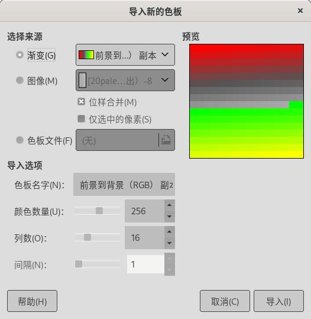

可停靠对话框→色板
无快捷键。
高级用户
可停靠对话框→色板
(色板是一组多个特定颜色的组合)
色板对话框主要用来管理和编辑色板，其操作方式与笔刷对话框相同，区别是，色板对话框管理的对象是色板。
相同的部分请参考 笔刷对话框，我们在这里仅说明不同的部分。
双击色板缩略图会打开 色板编辑器。
色板对话框弹出菜单
色板对话框弹出菜单
编辑色板：在 色板编辑器 中打开选中的色板，您可以进行编辑。(GIMP自带的色板无法编辑)
新建色板：打开 色板编辑器，创建一个全新的空白的色板。
导入色板：从渐变、图像或色板文件中的颜色创建一个新色板；此命令会打开“导入色板”对话框：
导入色板 对话框
3.1. 选择来源：选择导入色板的来源，可以选择渐变、图像、色板文件。3.2. 位样合并：勾选此项后，会从图像的所有可见图层提取颜色，否则仅从当前图层提取颜色。3.3. 仅选中的像素：从选中区域内拾取颜色。
色板名字：给新色板命名。
颜色数量：指定色板中的颜色数量。(最大10000)
列数：指定色板中列的数量。(显示方式)
间隔：把相似的颜色按平均值分组，从而获得更好的色板。
(导入的色板会自动保存在个人色板文件夹中)
复制色板：创建当前色板的副本，并在色板编辑器中打开，方便马上编辑。
合并色板：此命令仍在开发中，目前不可用。
复制色板位置：把色板文件的路径复制到剪贴板中。
在文件管理器中显示：打开文件管理器，并显示色板所在的目录。
删除色板：删除当前色板，包括在磁盘上的文件。
刷新色板：重新加载色板文件， 不需要重启GIMP就可以使用新色板。
渐变的调色板：使用色板上的所有颜色来形成当前的渐变，并保存在渐变对话框中。渐变端点的数量等于色板中颜色的数量。
排序调色板：根据一些给定的条件对色板中的颜色进行排序。
偏移调色板：偏移值为1时把最后一个颜色放到第一的位置。偏移参数其实是指这个操作执行的次数，可以为负值。
重复渐变的调色板：使用色板的所有颜色创建一个重复的渐变。这个渐变会出现在渐变对话框中，并成为当前的渐变。创建渐变的片段数比调色板上的颜色数量多一个。最左片段的左端点颜色与最右片段的右端点颜色相同。
导出为{Export as}：
待处理
此选项的说明等待GIMP官方更新。